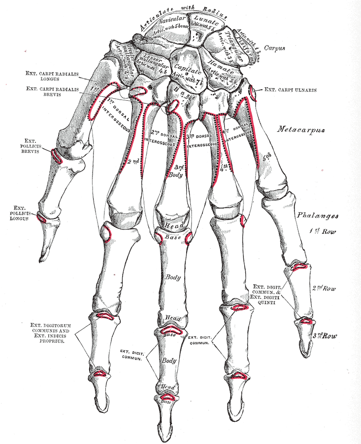

Condition
Wrist Arthritis
Worn-out cartilage in the wrist. Often from an old injury to a ligament or bone that has not healed properly.

What is wrist arthritis?
The wrist is made of eight small bones that sit between the forearm and the hand. Smooth cartilage caps each bone so they glide against one another. When that cartilage wears out, the bones rub and the wrist becomes painful and stiff. In the hand and wrist, the most common patterns are:
- SLAC wrist — scapholunate advanced collapse, from an old untreated tear of the scapholunate ligament
- SNAC wrist — scaphoid nonunion advanced collapse, from an old scaphoid fracture that did not heal
- Kienböck's disease — loss of blood flow to the lunate bone, which slowly collapses and leads to arthritis
- Post-traumatic arthritis — from an old distal radius or carpal fracture that healed in an imperfect position
- Inflammatory arthritis — rheumatoid and other inflammatory conditions can damage the wrist joint directly
Common symptoms
- Deep aching pain in the wrist, worse with use
- Stiffness and loss of wrist motion
- Weak grip
- Swelling on the back of the wrist
- A grinding or clicking sensation with motion
Why does it happen?
Most wrist arthritis traces back to an old injury. A scapholunate ligament tear or a scaphoid fracture that was never diagnosed can take 10 to 20 years to cause full arthritis, which is why many patients do not remember the original injury. Kienböck's disease is thought to start with a small interruption in blood flow to the lunate bone. Rheumatoid and other inflammatory conditions attack the lining of the joint directly.
Treatment options
Non-surgical treatment
- Wrist splint or brace. A supportive splint worn during painful activities can significantly reduce pain.
- Anti-inflammatories. Over-the-counter medicines (ibuprofen, naproxen) help during flares.
- Activity modification. Reducing the activities that load the wrist often extends how long the wrist feels good.
- Steroid injection. A cortisone injection into the wrist can give months of relief and is a reasonable first step for most patients.
Surgical treatment
- Proximal row carpectomy (PRC). Three of the small carpal bones are removed to make a new, smoother joint. Motion is preserved, and recovery is relatively quick.
- Partial wrist fusion. A few of the wrist bones are fused together, which keeps some motion while eliminating the painful worn-out part of the wrist. Often called a "four-corner fusion."
- Total wrist fusion. The whole wrist is fused into a single block. Motion is lost, but the wrist is strong and pain-free. This is the most durable option for heavy laborers.
- Total wrist replacement. In selected lower-demand patients, the wrist joint is replaced with an implant to preserve motion. Not for everyone.
What to expect at your visit
Dr. Barrera will examine the wrist, check motion and grip strength, and review X-rays. X-rays alone often tell the full story; an MRI or CT is sometimes needed to evaluate blood flow to the lunate (for Kienböck's) or cartilage wear patterns. The choice of surgery depends on which part of the wrist is worn, how active you are, and how much motion you want to keep.
Call us if a wrist that has been stable suddenly becomes much more painful, swollen, or red; if you cannot move the wrist at all; or if you notice a deformity or collapse. Sudden severe pain after an old injury can mean the arthritis has progressed and may change treatment options.
Questions?
Call the office at 646-501-4950, or see our office contact information.